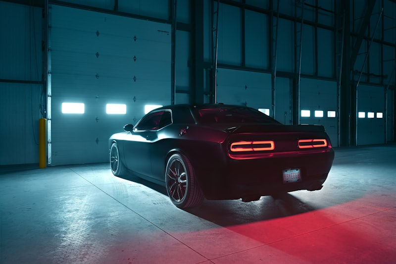

Nissan Repair & Service in Cedar Rapids
Your local Nissan specialists — from routine maintenance to CVT rebuilds.
Expert Nissan Repair in Cedar Rapids
Nissan builds some of the most popular vehicles on the road today, and Cedar Automotive keeps them running right. Whether you drive an Altima, Rogue, Sentra, Pathfinder, Frontier, or Titan, our technicians know Nissan engineering inside and out. We handle everything from routine oil changes and brake jobs to complex CVT transmission rebuilds and engine overhauls.
Nissan's CVT transmissions require specialized knowledge and the right fluid specifications. Many general shops don't have the experience to properly service or diagnose CVT problems. At Cedar Automotive, we've worked on hundreds of Nissan CVTs and understand the common failure patterns, correct fluid types, and repair procedures that keep your transmission shifting smoothly for years to come.
From the fuel-efficient Sentra to the heavy-duty Titan, every Nissan model gets the same level of attention and care. We use professional-grade diagnostic equipment to read Nissan-specific fault codes and access live sensor data — the same capability as the dealership, without the dealership price tag. Located in Cedar Rapids near the regional airport, we offer same-day service for most maintenance and repair appointments.
Nissan Services We Provide
- Oil changes and fluid services (conventional and synthetic)
- Brake inspection, repair, and replacement
- CVT transmission service, fluid change, and rebuild
- Engine diagnostics and check engine light diagnosis
- Electrical system diagnostics and repair
- Suspension and steering repair
- AC and heating system service
- Timing chain inspection, tensioner, and replacement

Why Choose Cedar Automotive for Your Nissan?
Nissan Diagnostic Expertise
Professional-grade scanners read Nissan-specific codes and live data — not just generic OBD-II. We pinpoint problems fast.
CVT Transmission Specialists
We understand Nissan CVT fluid specs, valve body issues, and common failure patterns. Proper service extends CVT life significantly.
Dealership Quality, Fair Pricing
Same diagnostic capability as the Nissan dealer — without the dealer markup. Honest estimates before work begins.
Common Nissan Issues We Fix
These are the problems we see most often in Nissan vehicles at our Cedar Rapids shop.
CVT Transmission Failure
Nissan's Jatco CVT transmissions are prone to overheating, shuddering, and premature failure — especially in Altima, Rogue, and Sentra models. We diagnose CVT issues accurately and offer fluid service, valve body repair, or complete rebuilds.
Excessive Oil Consumption
Many Nissan models with the QR25DE engine burn oil between changes. We identify the root cause — whether it's piston rings, valve seals, or PCV system issues — and recommend the right fix for your situation.
Timing Chain Stretch (QR25DE)
The QR25DE engine found in Altima, Rogue, and Sentra is known for timing chain stretch that causes rattling on startup and can eventually lead to engine damage. We replace the chain, guides, and tensioner before it becomes a bigger problem.
AC Compressor Failure
Nissan AC compressors can fail prematurely, leaving you without cold air in Iowa summers. We diagnose refrigerant leaks, compressor clutch issues, and electrical faults to restore your AC system.
Catalytic Converter Problems
Nissan vehicles frequently trigger P0420 catalytic converter efficiency codes. We determine whether it's a failing converter, oxygen sensor issue, or exhaust leak — so you don't replace parts you don't need.
Steering Column Lock Failure
Many Nissan models experience steering column lock module failures that prevent the car from starting. We diagnose and repair the electronic steering lock system to get you back on the road.
Related Services
Frequently Asked Questions
How much does Nissan CVT transmission service cost in Cedar Rapids?
CVT transmission service costs vary depending on whether you need a fluid change, a valve body repair, or a full rebuild. At Cedar Automotive, we diagnose the issue first and give you an honest, upfront estimate before any work begins. Call (319) 450-7584 for a quote.
Do you use OEM parts for Nissan repairs?
We offer both OEM and quality aftermarket parts for Nissan repairs. We'll discuss your options and let you choose what fits your budget and driving needs — no pressure, just honest advice.
Can you fix a Nissan check engine light in Cedar Rapids?
Yes. We use professional-grade diagnostic scanners to read Nissan-specific fault codes — not just generic OBD-II readers. Whether it's a catalytic converter code, CVT issue, or oxygen sensor, we pinpoint the exact problem and fix it right the first time.